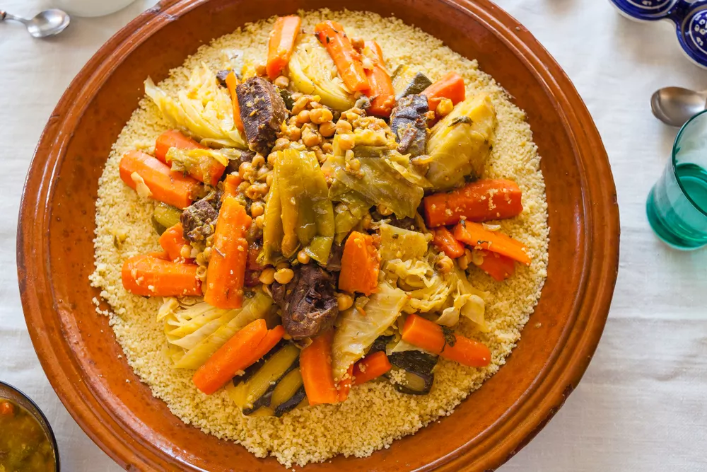
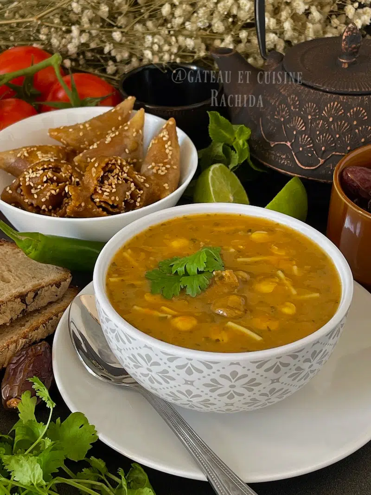
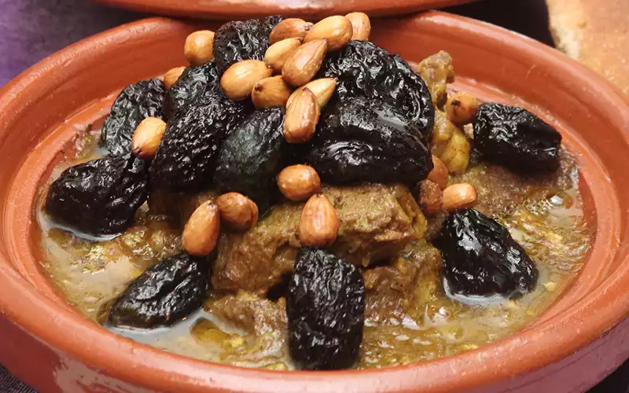

Nourriture
La gastronomie marocaine est une véritable symphonie de saveurs, fusionnant habilement épices exquises et
ingrédients frais. Des plats emblématiques tels que le couscous, joyau de la cuisine, se dévoilent avec une
semoule légère accompagnée de viandes parfumées et de légumes colorés, créant une explosion de goûts en
chaque bouchée. Le tagine, cuit lentement dans ses céramiques caractéristiques, offre une expérience
gustative unique. Viandes tendres, légumes mijotés et fruits secs se marient dans un mélange de saveurs,
révélant la richesse culinaire du Maroc. La pastilla, délice sucré-salé, séduit avec ses couches fines de
pâte feuilletée renfermant un trésor de poulet, d'amandes et d'épices, saupoudré de sucre glace pour une
touche exquise. Chaque plat marocain raconte une histoire, transporte dans un voyage sensoriel où les
traditions ancestrales se mêlent à la créativité culinaire. Découvrir la cuisine du Maroc, c'est s'immerger
dans un festin de saveurs qui révèle l'âme chaleureuse et accueillante de ce pays envoûtant.
|

|
Couscous Marocain-
Le couscous marocain, trésor culinaire du Maroc, est un plat emblématique originaire du
Maghreb. Préparé avec une semoule fine et accompagné de viandes savoureuses, de légumes
colorés et d'épices parfumées, il séduit par sa texture légère et ses arômes envoûtants.
Ce plat traditionnel est bien plus qu'une simple nourriture ; il incarne l'hospitalité
marocaine et symbolise les riches traditions culinaires du pays. Servi généralement lors
d'occasions spéciales.
|

|
Pastila
La pastilla marocaine est une délicieuse tourte feuilletée, mariage parfait du sucré et
du salé. Garnie de viandes tendres, d'amandes croquantes et d'épices exquises, elle offre
une expérience gustative unique. Cette spécialité culinaire incarne l'art de la cuisine
marocaine, séduisant par son mélange raffiné de saveurs et sa présentation élégante.
|
|

|
Harira Marocaine
La harira marocaine, soupe emblématique, réchauffe les cœurs avec son mélange généreux de
lentilles, de tomates, de coriandre et d'épices. Célébrée traditionnellement pendant le
mois de Ramadan, elle incarne la chaleur de la cuisine marocaine et sa capacité à réunir
les gens autour d'une délicieuse tradition culinaire. Chaque cuillerée offre une
expérience réconfortante et savoureuse, faisant de la harira une incontournable de la
gastronomie marocaine.
|
|

|
Tajine Marocain
Le tajine à la viande, trésor de la cuisine marocaine, offre une explosion de saveurs avec
ses morceaux de viande tendre mijotés lentement avec des épices, des fruits secs et des
légumes. Cuit dans son plat caractéristique, ce plat emblématique incarne l'art de la
cuisson traditionnelle au Maroc. Chaque bouchée dévoile la richesse gustative de cette
spécialité, créant une expérience culinaire mémorable au cœur de la tradition marocaine.
|